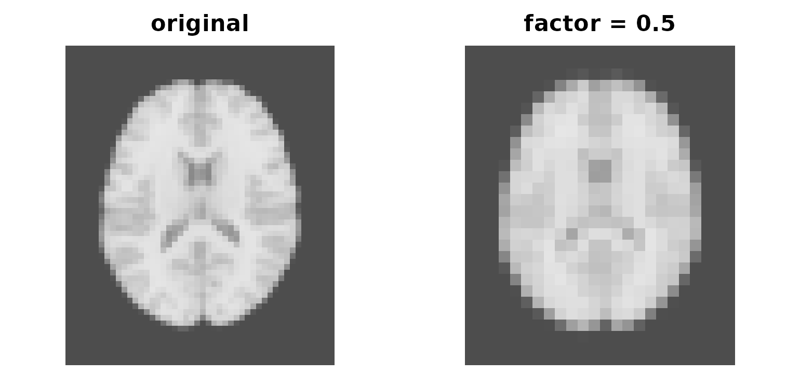

Resampling and orientation
Source:vignettes/resampling-and-orientation.Rmd
resampling-and-orientation.RmdFour operations change an image’s grid. They are easy to confuse because three of them can change its shape, but the distinction that matters is different: whether the anatomy stays where it was in the scanner.
| Operation | Changes the array | Moves the anatomy in world space | Use when |
|---|---|---|---|
downsample() |
yes | no | you want fewer voxels |
resample_to() |
yes | no | you must match another image |
reorient() |
no | yes | the axis codes are wrong |
deoblique() |
yes | no | the affine is oblique |
The first, second and fourth rewrite voxel values precisely in
order to leave the anatomy where it is. reorient() is
the opposite: it leaves the array alone and relabels the axes, which
relocates every voxel in world space. That makes it the dangerous one if
the codes were not in fact wrong.
anat <- demo_anatomy()
mask <- demo_mask()Downsampling
downsample() keeps the field of view and coarsens the
grid. Give it exactly one of factor, spacing
or outdim:
half <- downsample(anat, factor = 0.5)
dim(anat)
#> [1] 48 57 48
dim(half)
#> [1] 24 28 24
round(spacing(half), 3)
#> [1] 2.000 2.036 2.000The result is no longer isotropic, because
round(57 * 0.5) is 28 rather than 28.5 — rounding a grid
always perturbs the spacing slightly.
op <- par(mfrow = c(1, 2), mar = c(1, 1, 2, 1))
image(seq_len(dim(anat)[1]), seq_len(dim(anat)[2]), anat[, , 24],
main = "original", col = gray.colors(256), axes = FALSE, ann = TRUE,
xlab = "", ylab = "", asp = 1
)
image(seq(1, dim(anat)[1], length.out = dim(half)[1]),
seq(1, dim(anat)[2], length.out = dim(half)[2]), half[, , 12],
main = "factor = 0.5", col = gray.colors(256), axes = FALSE, ann = TRUE,
xlab = "", ylab = "", asp = 1
)
Full and half resolution, drawn at matched physical extent.
par(op)downsample() box-averages, which is right for intensity
images and wrong for labels — averaging label 3 and label 5 gives you
label 4.
Resampling onto a target grid
resample_to() puts an image onto any grid you name.
Building that grid is where things go wrong, so start there.
Build the target from the source affine
It is tempting to describe a target with dim,
spacing and origin. Do not: those three do not
carry orientation, and the constructor produces an
axis-aligned RAS affine regardless of what the source looked like.
affine_to_axcodes(trans(mask))
#> [1] "L" "A" "S"
naive <- NeuroSpace(round(dim(mask) * 1.6), spacing(mask) / 1.6, origin = origin(mask))
affine_to_axcodes(trans(naive))
#> [1] "R" "A" "S"The source runs LAS and the target runs
RAS. The two affines differ only in the sign of their first
column, which is enough to put the target grid where the source has no
data. Resampling into it succeeds and returns an empty image:
sum(resample_to(mask, naive, method = "nearest"))
#> Warning: The resample target covers little of the source image.
#> ! Their world bounding boxes overlap over 0% of the target, so most of the
#> output will be background.
#> ℹ Source spans [-108.5, 112.0] [-108.5, 112.0] [-46.2, 42.6] and the target
#> [112.0, 332.9] [-108.5, 112.4] [-46.2, 43.9].
#> ℹ A target built with `NeuroSpace(dim, spacing, origin)` gets a
#> positive-diagonal affine, which mirrors a source whose x axis runs the other
#> way. Pass `trans =` explicitly, or use `resample_to()` with the image you
#> want to match.
#> [1] 0No error, no warning, no data. Scale the source’s own affine instead, which keeps orientation and origin intact:
tr <- trans(mask)
tr[1:3, 1:3] <- tr[1:3, 1:3] / 1.6
finer <- NeuroSpace(round(dim(mask) * 1.6), trans = tr)
affine_to_axcodes(trans(finer))
#> [1] "L" "A" "S"
round(spacing(finer), 3)
#> [1] 2.188 2.188 2.312Then check the result, every time. Rounding the grid means the true scale factors are not exactly 1.6, so compare against the ratio you actually got:
up <- resample_to(mask, finer, method = "nearest")
expected <- sum(mask) * prod(dim(finer) / dim(mask))
c(source = sum(mask), resampled = sum(up), expected = expected)
#> source resampled expected
#> 29532.0 120126.0 120019.9
abs(sum(up) / expected - 1)
#> [1] 0.0008840722Under a tenth of a percent. A discrepancy much larger than that means the target grid does not enclose the source.
Choosing an interpolation method
"nearest", "linear" and
"cubic" are available and the default is
"nearest", so pass "linear" explicitly for
continuous data. The rule is labels and masks take
"nearest", continuous data takes "linear" or
"cubic", and the reason is one number:
lin <- resample_to(mask, finer, method = "linear")
a <- as.array(lin)
fractional <- sum(abs(a - round(a)) > 1e-6)
c(voxels = fractional, of_resampled_mask = fractional / sum(up))
#> voxels of_resampled_mask
#> 2.283700e+04 1.901087e-01Nearly a fifth of the mask comes back as values strictly between 0 and 1. Those voxels are neither in nor out, and every count taken afterwards is wrong.
Nearest is not free either: it preserves the label set, not
the volume. Any mask resample changes how many voxels are in
the mask, so check sum() whichever method you use.
Matching another image
The common real task needs no target construction — pass the image whose grid you want:
coarse <- downsample(mask, factor = 0.5) # used only as a grid donor
matched <- resample_to(mask, coarse, method = "nearest")
identical(dim(matched), dim(coarse))
#> [1] TRUE
identical(trans(space(matched)), trans(space(coarse)))
#> [1] TRUETwo images that share a NeuroSpace can be compared,
overlaid and subtracted. Two that do not, cannot — several plotting
helpers require it explicitly rather than resampling silently behind
your back.
Reorienting
reorient() rewrites a space so its axes carry different
codes, without touching a single voxel.
vignette("spaces-and-coordinates") covers the codes
themselves; what matters here is what it does to positions.
ras <- reorient(space(mask), c("R", "A", "S"))
affine_to_axcodes(trans(space(mask)))
#> [1] "L" "A" "S"
affine_to_axcodes(trans(ras))
#> [1] "R" "A" "S"The array is untouched, so the anatomy moves:
rbind(
before = as.vector(grid_to_coord(space(mask), matrix(c(1, 1, 1), nrow = 1))),
after = as.vector(grid_to_coord(ras, matrix(c(1, 1, 1), nrow = 1)))
)
#> [,1] [,2] [,3]
#> before 112.0 -108.5 -46.25
#> after -108.5 -108.5 -46.25Voxel (1,1,1) has jumped from x = +112 to
x = -112. Use reorient() when a file’s codes
are genuinely wrong, not to change how an image is stored.
There is no reorient() method for a
NeuroVol — it operates on spaces. To rearrange the array as
well, reorient a copy of the space and resample into it:
flipped <- resample_to(mask, reorient(space(mask), c("R", "A", "S")), method = "nearest")
c(source = sum(mask), flipped = sum(flipped))
#> source flipped
#> 29532 29532That is lossless here because LAS to RAS is
a pure flip. It is not lossless when the requested
codes permute axes: reorient() leaves dim and
spacing alone, so a rotated box no longer encloses the
original one and the corners are cut off.
permuted <- reorient(space(mask), c("P", "S", "R"))
lost <- resample_to(mask, permuted, method = "nearest")
c(source = sum(mask), permuted = sum(lost), kept = sum(lost) / sum(mask))
#> source permuted kept
#> 29532 29532 1A fifth of the mask, gone without a warning. For anything beyond a
flip, build a target grid that encloses the rotated field of view —
output_aligned_space() and deoblique()’s grid
arguments exist for this.
Deobliquing
Scanners often acquire at a tilt, leaving off-diagonal terms in the
affine. obliquity() measures it, in radians per axis:
aff <- matrix(c(
3.0, 0.3, 0.0, -90,
0.0, 3.0, 0.15, -126,
0.0, 0.0, 4.0, -72,
0.0, 0.0, 0.0, 1
), nrow = 4, byrow = TRUE)
tilted <- NeuroVol(array(rnorm(64 * 64 * 30), c(64, 64, 30)),
NeuroSpace(c(64L, 64L, 30L), trans = aff))
round(obliquity(trans(space(tilted))) * 180 / pi, 2)
#> [1] 0.00 5.71 2.15deoblique() builds an axis-aligned space enclosing the
field of view and, given a volume rather than a space, resamples the
data into it.
straight <- deoblique(tilted)
rbind(before = c(dim(tilted), round(spacing(space(tilted)), 2)),
after = c(dim(straight), round(spacing(space(straight)), 2)))
#> [,1] [,2] [,3] [,4] [,5] [,6]
#> before 64 64 30 3 3.01 4
#> after 71 66 40 3 3.00 3The grid grows for two reasons, and only one is the tilt. An
axis-aligned box around a rotated one is bigger — but
deoblique() also regrids to an isotropic grid at
the smallest input voxel size by default, which is why the
third axis went from 30 slices at 4 mm to 40 at 3 mm despite having no
tilt at all. Pass a grid explicitly if that is not what you want.
deoblique() also defaults to
method = "linear", the opposite of
resample_to(). On a mask, pass
method = "nearest":
frac <- function(x) mean(abs(as.array(x) - round(as.array(x))) > 1e-6)
c(linear = frac(deoblique(mask)), nearest = frac(deoblique(mask, method = "nearest")))
#> linear nearest
#> 0.02261466 0.00000000as_canonical() is the related convenience, reorienting
to RAS and resampling in one step. On an image that is already canonical
it returns the input untouched, so check the codes rather than the
dimensions — as_canonical() never permutes the array:
affine_to_axcodes(trans(space(mask)))
#> [1] "L" "A" "S"
affine_to_axcodes(trans(space(as_canonical(mask))))
#> [1] "R" "A" "S"Because it is reorient() plus resample(),
it inherits the enclosure problem above. Check sum()
afterwards on anything that is not a pure flip.
Where to go next
-
vignette("spaces-and-coordinates")— the affine you are rebuilding -
vignette("visualization")— checking a resample by eye -
?resample_to,?downsample,?reorient,?deoblique,?as_canonical